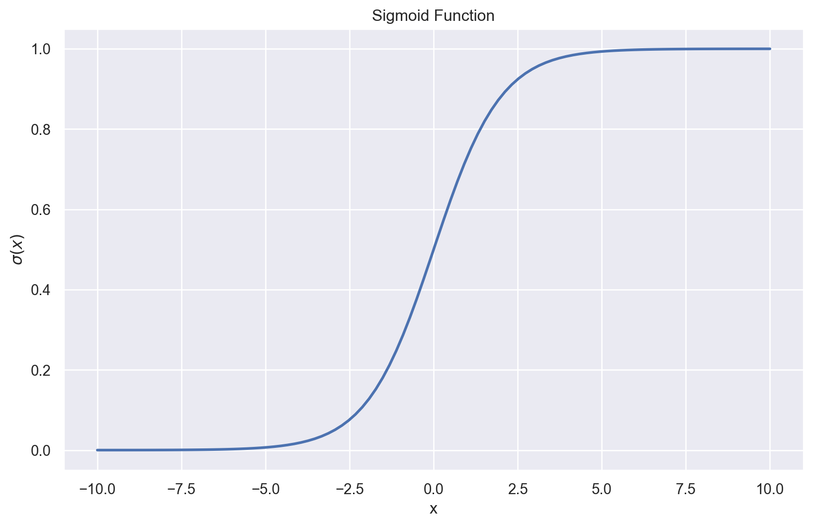
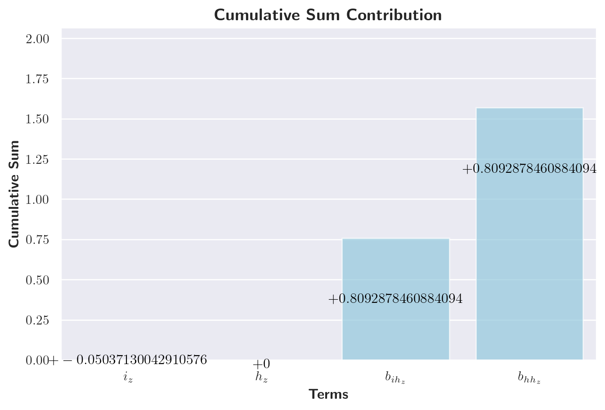
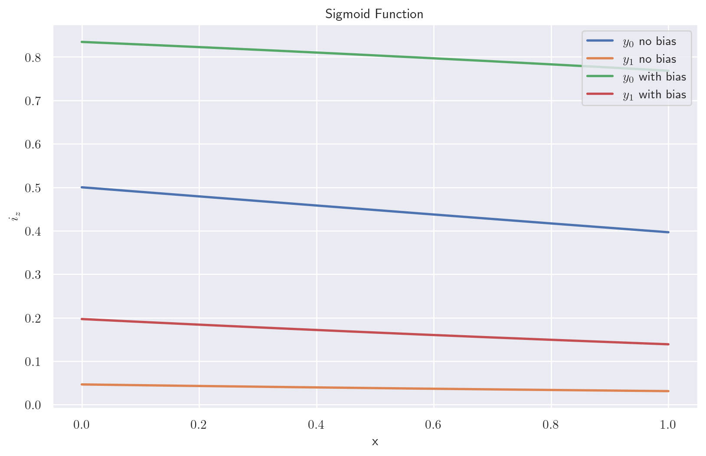
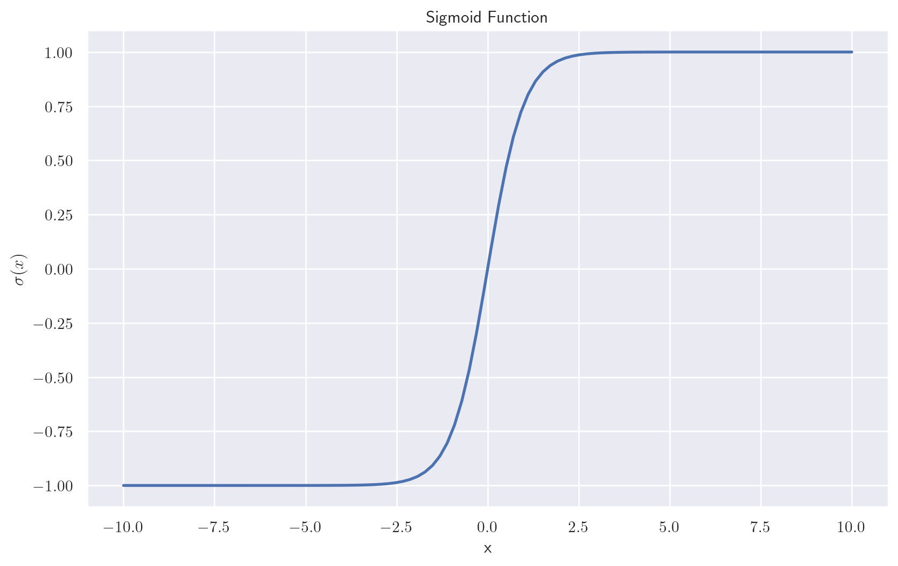

Analyzing GRU Training Dynamics on the Adding Problem - Part 2
programming
web development
research
diary
R&D
Author
Luca Simonetti
Published
February 20, 2025
1 Introduction
In this blog post, I’ll complete the journey started in the previous post in which I introduced the problem and showed some interesting plots depicting weights and the learning dynamics that was behind it. I tried to explain the way that GRU works under the hood, step by step with a full example of a sequence going through the whole GRU. We saw step by step each and every transformation that the input is subjected to. In this blog post we will do something in my opinion more interesting that is analysing the weights. Now, this can actually mean everything so I want to split the discussion in two parts:
What the weights actually mean? We saw a complete forward pass that showed more or less how the initial input is transformed into the hidden layer. But why those specific weights rather than other values?
How did we get there? It’s well known that weights are usually randomly initialized in networks, so how did we get from those random values to our values? Is the dynamics of the learning responsible of the specific values? Could have this been done differently? Could have the weights have followed different trajectories? In either case can it be proved?
Let’s begin, this is gonna be a lot of fun! (And a lot of work!!)
2 What those parameters mean?
Note
I will use weights and parameters interchangeably. One could argue that they have different meanings (and it might even be true) but in our case maybe we can loosen a bit this detail in terminology and live happily anyway.
So: what those parameter mean?
I tried to figure this out because I noticed one really weird thing looking at the last hidden layer of our walkthrough.
Let’s refresh quickly what was the example, remember that the input sequence was:
My architecture was given the smallest hidden layer as possible on purpose. What I was trying to do was pushin the GRU cell to make the best out of what it had, and my expectation was that at some point it would have learned to basically add to it’s hidden layer the value in position \(0\) iff the flaf in position \(1\) was equal to \(true\) (or \(1\) ok…) This didn’t happen and looking back at my original thought I feel a bit stupid about it. Let’s recall what a GRU cell is. Initially, for \(t = 0\), the hidden layer is \(h_0 = 0\).
then the cell uses this series of transformations to get tha hidden layer out:
if you look at the activation function this should already ring a bell, but let’s walk through step by step. Let’s assume we always have four elements and 2 of them are summed to the total. Let’s also assume that we normalize to the maximum each single value can reach (in our case \(100\)). Let’s have an extreme example now:
Now: if my first hypothesis was right the hidden layer should have contained something like \(1.0 + 1.0 = 2.0\). But this could have never happened. Why? Look at the activation functions and also at how the new hidden cell is calculated \[
h_t = z_t \odot h_{t-1} + (1 - z_t) \odot \hat{h}_t
\]
Basically it’s a weighted sum of the old value of the cell and the new value of the cell. If the weight was either \(0\) or \(1\) in extreme cases this would have meant that either the old value was being kept as it was (ignoring totally the new value) or the converse: the old value was forgotten and the new was taking its place. So we might expect that the truth is in the middle, meaning that \(z_t\) was around \(.5\) so that it took half the information from the \(t-1\) step and half the information from the new value. But does this make sense? Why \(\frac{1}{2}\)?
If we see at what the network is doing instead, we observe a cool and symmetrical (I LOVE SYMMETRIES!) behaviour. What is that? If you see the old post you’ll see that \(z_t\) takes on some nice values that are
Basically when the flag is \(0\), then \(z_t \ge .825\) otherwise \(z_t \le .166\). So we already observe a pattern. I love this so much! Let’s recall then how \(z_t\) is computed:
\[
z_t = \sigma(W_z x_t + U_z h_{t-1} + b_z)
\]
where \(\sigma\) is the sigmoid function. Recall that the sigmoid function squeezes its input in the range \([0,1]\) In the plot below we map \(100\) points to the sigmoid function (did you know that function, map and application are quite the same thing in math?)
Code
import numpy as npimport seaborn as snsimport matplotlib.pyplot as pltx = np.linspace(-10,10,100)y =1/(1+np.exp(-x))sns.set_theme(style="darkgrid") # This gives the typical Seaborn lookplt.figure(figsize=(10, 6))sns.lineplot(x=x, y=y, linewidth=2)plt.title('Sigmoid Function')plt.xlabel('x')plt.ylabel('$\sigma(x)$')plt.grid(True)plt.show()

So now, let’s do something nice and get back our weights, that are gonna be useful for our next section.
Code
import jsonimport numpy as npimport torchimport torch.nn as nnfrom torch.utils.data import DataLoader, TensorDatasetfrom tqdm.notebook import trange, tqdmimport matplotlib.pyplot as pltimport seaborn as snsimport pandas as pdimport osclass AddingProblemGRU(nn.Module):def__init__(self, input_size, hidden_size, output_size):super(AddingProblemGRU, self).__init__()self.gru = nn.GRU( input_size, hidden_size, num_layers=1, batch_first=True )self.linear = nn.Linear(hidden_size, output_size)self.init_weights()def init_weights(self):for name, param inself.gru.named_parameters():if"weight"in name: nn.init.orthogonal_(param)elif"bias"in name: nn.init.constant_(param, 0) nn.init.xavier_uniform_(self.linear.weight) nn.init.zeros_(self.linear.bias)def forward(self, x): out, hn =self.gru(x) output =self.linear(out[:, -1, :])return output, out# ReproducibilityRANDOM_SEED =37np.random.seed(RANDOM_SEED)torch.manual_seed(RANDOM_SEED)torch.cuda.manual_seed_all(RANDOM_SEED)torch.backends.cudnn.deterministic =Truetorch.backends.cudnn.benchmark =False# HyperparametersDELTA =0SEQ_LEN =4HIGH =100N_SAMPLES =10000TRAIN_SPLIT =0.8BATCH_SIZE =256LEARNING_RATE =1e-4WEIGHT_DECAY =1e-5CLIP_VALUE =2.0NUM_EPOCHS =3000HIDDEN_SIZE =1OUTPUT_SIZE =1INPUT_SIZE =2def adding_problem_generator(N, seq_len=6, high=1, delta=0.6): actual_seq_len = np.random.randint(int(seq_len * (1- delta)), int(seq_len * (1+ delta)) ) if delta >0else seq_len num_ones = np.random.randint(2, min(actual_seq_len -1, 4)) X_num = np.random.randint(low=0, high=high, size=(N, actual_seq_len, 1)) X_mask = np.zeros((N, actual_seq_len, 1)) Y = np.ones((N, 1))for i inrange(N): positions = np.random.choice(actual_seq_len, size=num_ones, replace=False) X_mask[i, positions] =1 Y[i, 0] = np.sum(X_num[i, positions]) X = np.append(X_num, X_mask, axis=2)return X, YX, Y = adding_problem_generator(N_SAMPLES, seq_len=SEQ_LEN, high=HIGH, delta=DELTA)training_len =int(TRAIN_SPLIT * N_SAMPLES)train_X = X[:training_len]test_X = X[training_len:]train_Y = Y[:training_len]test_Y = Y[training_len:]train_dataset = TensorDataset( torch.tensor(train_X).float(), torch.tensor(train_Y).float())train_loader = DataLoader(train_dataset, batch_size=BATCH_SIZE, shuffle=True)test_dataset = TensorDataset( torch.tensor(test_X).float(), torch.tensor(test_Y).float())test_loader = DataLoader(test_dataset, batch_size=BATCH_SIZE, shuffle=False)# File paths for saved datatrain_losses_path ="train_losses.json"test_losses_path ="test_losses.json"all_weights_path ="all_weights.json"model_save_path = (f"gru_adding_problem_model_epochs_{NUM_EPOCHS}_hidden_{HIDDEN_SIZE}.pth")FORCE_TRAIN =Falsedevice = torch.device("cuda"if torch.cuda.is_available() else"cpu")criterion = nn.MSELoss()def evaluate(model, data_loader, criterion, high): model.eval() total_loss =0with torch.no_grad():for inputs, labels in data_loader: inputs, labels = inputs.to(device), labels.to(device) inputs[:, :, 0] /= high outputs, _ = model(inputs) outputs = outputs * high loss = criterion(outputs, labels) total_loss += loss.item() * inputs.size(0)return total_loss /len(data_loader.dataset)# Try to load data from filesif FORCE_TRAIN ==Falseand os.path.exists(train_losses_path) and os.path.exists(test_losses_path) and os.path.exists(all_weights_path) and os.path.exists(model_save_path):withopen(train_losses_path, "r") as f: train_losses = json.load(f)withopen(test_losses_path, "r") as f: test_losses = json.load(f)withopen(all_weights_path, "r") as f: all_weights_loaded = json.load(f)# Convert loaded weights (which are lists) back to numpy arrays all_weights = []for epoch_weights_list in all_weights_loaded: epoch_weights_dict = {}for name, weights_list in epoch_weights_list.items(): epoch_weights_dict[name] = np.array(weights_list) all_weights.append(epoch_weights_dict)#load model model = AddingProblemGRU( input_size=INPUT_SIZE, hidden_size=HIDDEN_SIZE, output_size=OUTPUT_SIZE) model.load_state_dict(torch.load(model_save_path)) model.to(device)else: model = AddingProblemGRU( input_size=INPUT_SIZE, hidden_size=HIDDEN_SIZE, output_size=OUTPUT_SIZE ) model.to(device) optimizer = torch.optim.Adam( model.parameters(), lr=LEARNING_RATE, weight_decay=WEIGHT_DECAY ) scheduler = torch.optim.lr_scheduler.ReduceLROnPlateau( optimizer, mode="min", factor=0.5, patience=5, min_lr=1e-6, verbose=False ) train_losses = [] test_losses = [] all_weights = []for epoch in trange(NUM_EPOCHS, desc="Epoch"): running_loss =0.0for inputs, labels in train_loader: inputs, labels = inputs.to(device), labels.to(device) inputs[:, :, 0] /= HIGH labels_scaled = labels / HIGH optimizer.zero_grad() outputs, _ = model(inputs) loss = criterion(outputs, labels_scaled) loss.backward() torch.nn.utils.clip_grad_norm_(model.parameters(), CLIP_VALUE) optimizer.step() running_loss += loss.item() * inputs.size(0) epoch_loss = running_loss /len(train_loader.dataset) train_losses.append(epoch_loss)if epoch %49==0: test_loss = evaluate(model, test_loader, criterion, HIGH) test_losses.append(test_loss) scheduler.step(test_loss) weights_dict = {}for name, param in model.named_parameters(): weights_dict[name] = param.data.cpu().numpy().copy() all_weights.append(weights_dict)else: test_losses.append(None)# Save data to fileswithopen(train_losses_path, "w") as f: json.dump(train_losses, f)withopen(test_losses_path, "w") as f: json.dump(test_losses, f)# Convert weights to lists for JSON serialization all_weights_serializable = [ {k: v.tolist() for k, v in epoch_weights.items()}for epoch_weights in all_weights ]withopen(all_weights_path, "w") as f: json.dump(all_weights_serializable, f)# Save Model model_save_path = (f"gru_adding_problem_model_epochs_{NUM_EPOCHS}_hidden_{HIDDEN_SIZE}.pth" ) torch.save(model.state_dict(), model_save_path)input_sequence = torch.tensor([ [12,0], [37,1], [12,0], [21,1],]).float().unsqueeze(0)input_sequence[:, :, 0] /= HIGH# Get weights from the last training epoch. 'all_weights' is populated by the loading/training section.last_epoch_weights = model.state_dict() #all_weights[-1]# Extract the relevant weight matricesW_ih = torch.tensor(last_epoch_weights['gru.weight_ih_l0']).float() # Input-to-hiddenW_hh = torch.tensor(last_epoch_weights['gru.weight_hh_l0']).float() # Hidden-to-hiddenb_ih = torch.tensor(last_epoch_weights['gru.bias_ih_l0']).float() # Input-to-hidden biasb_hh = torch.tensor(last_epoch_weights['gru.bias_hh_l0']).float() # Hidden-to-hidden biasW_linear = torch.tensor(last_epoch_weights['linear.weight']).float() # Linear layer weightsb_linear = torch.tensor(last_epoch_weights['linear.bias']).float() # Linear layer bias
3 The Update Gate at \(t=0\)
Let’s start our analysis from the bottom up in the calculation of the updated value of the hidden state. For how PyTorch implements the GRU cell under the hood the \(z_t\) value is used in this way:
This means basically that the higher the value of \(\texttt{updategate}\), the more we should keep in memory our previous value (sum?) and ignore the newgate (the update in memory, the term to be added to the sum?). This sums up with our previous observation: with flag \(1\), update gate was pretty low and when flag was \(0\) then \(z_t\) was pretty high. But how much each component is involved in this behaviour?
This is interesting. So let’s break this down a little bit.
Probably it’s a good idea to verify how each term here is calculated and what happens. Let’s begin with seeing how \(i_z\) is calculated, using the original weight matrix.
What we do to obtain \(i_z\) is multiply our input row vector \(x_0^T = \left[\begin{smallmatrix}0.12 \\ 0.0\end{smallmatrix}\right]\) by the column vector \(W_{ih_z}^T\)
Now this conveys a super important information: when the \(\texttt{flag} = 0\) then only the number has some importance in the final calculation because the flag cancels the second term of the sum as saw before. Now remember, this is only one of the three terms that go through the sigmoid at the end to obtain the final \(z_t\) term.
So let’s carry on with the second part of it, \(h_z\): basically it’s \(0\) since when our GRU cell sees the input for the first time its input state is \(h=0\), and whatever we multiply here stays zero.
\[
h_z = -0.0
\]
Now the last portion of our sum, the bias. Now, you should know that many ML scientists avoid using the bias term when the data is already centered or when the model inherently accounts for offsets, as it can be redundant and complicate interpretation. But in my case the bias was left there. And in the first calculation you can observe that without the bias term accounts super heavily on the final sum:
I’ve always believed that a plot tells more then hundred numbers, so let’s plot a cumulative sum of the four terms to check how much each of them accounts for the gran total:
Code
import numpy as npimport pandas as pdimport seaborn as snsimport matplotlib.pyplot as pltplt.rcParams["text.usetex"] =Trueitems = [r"$i_z$", r"$h_z$", r"$b_{ih_z}$", r"$b_{hh_z}$"]values = [(input_sequence[0][0][0] * W_ih[1][0]).item(), 0, (b_ih[1]).item(), (b_hh[1]).item()]cumsum_values = np.cumsum(values)df = pd.DataFrame({"Term": items, "Cumulative Sum": cumsum_values})plt.figure(figsize=(8, 5))sns.barplot(x="Term", y="Cumulative Sum", data=df, color="skyblue", alpha=0.7)for i, (item, value) inenumerate(zip(items, values)): plt.text(i, cumsum_values[i] - value /2, f"$+{value}$", ha="center", fontsize=12, color="black")plt.ylabel(r"\textbf{Cumulative Sum}", fontsize=12)plt.xlabel(r"\textbf{Terms}", fontsize=12)plt.title(r"\textbf{Cumulative Sum Contribution}", fontsize=14)plt.ylim(0, max(cumsum_values) +.5) # Adjust y-limitplt.show()

Wow, so basically during the first iteration, we’re only dealing with bias terms. An important distinction to remember is that bias terms don’t depend on or connect to any individual data point being analyzed. Instead, they capture and convey overall patterns or information from the entire dataset as a whole.
To complete this first step, let’s do a sanity check. I plot here what would have happened after the first iteration to a number in the range \([0, 100]\) (remember normalized by a factor of \(100\), so in the final range of \([0,1]\)) There are 4 plots:
\(y_0\) with bias: In our trained GRU cell (green line), when \(\sigma\) is applied to an input flagged with \(0\), the values oscillate between \([0.77, 0.83]\).
\(y_1\) with bias: In our trained GRU cell (red line), when \(\sigma\) is applied to an input flagged with \(1\), the values oscillate between \([0.14, 0.20]\).
\(y_0\) no bias: If we removed the bias term \(b_z\) from the GRU cell (blue line) and applied \(\sigma\) to an input flagged with \(0\), the value stays around \(0.5\). The reason for the cell choosing such a strong bias remains unclear - it seems significant since it pushes \(z_t\) considerably higher.
\(y_1\) no bias: If we removed the bias term \(b_z\) from the GRU cell (orange line), and applied \(\sigma\) to an input flagged with \(1\), the values oscillate between \(0.05\). Again, the strong bias choice is super cool. One (crazy!) hypothesis: it pushes up \(z_t\) to act as a factor \(\frac{1}{4}\), possibly because the network expects 4 items where 2 flags are in unknown positions and maintains this factor to account for missing items by adding \(\frac{1}{4}\) of the current candidate.
The takeaway here is how the bias term strongly affects the outputs, particularly in pushing up \(z_t\). While we can hypothesize about the network’s strategy (especially regarding the \(\frac{1}{4}\) factor), the exact reason for such a strong bias will be hopefully uncovered in the next sections.
Code
bz = b_ih[1].item() + b_hh[1].item()x = np.linspace(0,1, 1000)y0 = x * W_ih[1][0].item()y1 = x * W_ih[1][0].item() + W_ih[1][1].item() y0_nb =1/ (1+ np.exp(-(y0)))y1_nb =1/ (1+ np.exp(-(y1)))y0_b =1/ (1+ np.exp(-(y0 + bz)))y1_b =1/ (1+ np.exp(-(y1 + bz)))sns.set_theme(style="darkgrid") # This gives the typical Seaborn lookplt.figure(figsize=(10, 6))sns.lineplot(x=x, y=y0_nb, linewidth=2, label='$y_0$ no bias')sns.lineplot(x=x, y=y1_nb, linewidth=2, label='$y_1$ no bias')sns.lineplot(x=x, y=y0_b, linewidth=2, label='$y_0$ with bias')sns.lineplot(x=x, y=y1_b, linewidth=2, label='$y_1$ with bias')plt.title('Sigmoid Function')plt.xlabel('x')plt.ylabel('$i_z$')plt.grid(True)plt.legend()plt.show()

Figure 1
4 The Reset gate at \(t=0\)
I lied earlier. I said we were going bottom up, but we’re actually approaching this top down because next in our discussion is the reset gate. The reasons is easy to tell: the update gate value \(z_t\) acts on the previous \(h_{t-1}\) as well as on \(\hat{h}_t\) (the candidate memory update). But to make a discussion about \(\hat{h}_t\) we need to discuss the reset gate \(r_t\) first.
Let’s recall again how both the reset gate and newgate are computed
First of all, you might have noticed already in the previous post that there was a different activation function in one step, which is \(\phi\). But what is \(\phi\)? It is the \(\tanh\), which yields a plot like this:
Code
import numpy as npimport seaborn as snsimport matplotlib.pyplot as pltx = np.linspace(-10,10,100)y = np.tanh(x)sns.set_theme(style="darkgrid") # This gives the typical Seaborn lookplt.figure(figsize=(10, 6))sns.lineplot(x=x, y=y, linewidth=2)plt.title('Sigmoid Function')plt.axis(True)plt.xlabel('x')plt.ylabel('$\sigma(x)$')plt.grid(True)plt.show()

Previously \(\sigma\) was squeezing its input in the range \([0, 1]\), whereas \(\phi\) maps its input to a value in the range \([-1, 1]\). The reason why the update gate employs this activation function is that the range ([-1, 1]) allows the gate to dynamically amplify, suppress, or invert features from the previous hidden state, enabling more nuanced control over the update mechanism compared to the purely additive or multiplicative behavior of \([0, 1]\). Moreover: this symmetry and bidirectional scaling can improve gradient flow during training and help the model learn richer representations by incorporating both positive and negative adjustments to the hidden state. In other words \(\sigma\) was telling: “How much of this should I add to this other thing?”, whereas \(\phi\) is telling “How much of this should I add or remove from this other thing?”
Now, why is this important? Remember that the GRU cell during its computation tries to build an internal hidden state that conveys some information. Think of the hidden state as some sort of scratchpad, where you take notes as you read more data. Sometimes some of the new information should be added to the previous state, sometimes new data should be ignored. Sometimes new data instead needs to kinda remove information from the state, in order to have fresher information.
Imagine for the sake of example to be a detective, which is trying to solve a mystery. You might get new information as time flows. At some point you might even have a track on a suspect and build your knowledge on that. But then at some point, you find out that your suspect was just cheating on his wife and as such you need to forget about him, otherwise you’ll focus on something that’s not needed in your ivnestigation.
How does our network know what to forget, what to keep, what to update and so on is the task of machine learning. But we can surely observe what happened here!
First we need to study the reset gate \(r_t\), similarly to how we did before!
Again, there are three components that go through the sigmoid for the update gate:
As we observed before the bias is king again, because it accounts for the largest part of the activation. But we can observe something else here, let’s compare how the flag affects both the update (\(z_t\)) and reset (\(r_t\)) gate:
In Figure 1 we saw how \(z_t\) was affected pretty heavily by the flag at position \(1\) of the input item, whereas in this case we observe that the reset gate is not affected too much about the flag. Basically it looks like if we have \(\texttt{flag} = 0\)
the reset gate \(r_t\) keeps taking a pretty large value (remember that sigmoid is in the range \([0,1]\), so you can consider it as a percentage, meaning that the reset gate is always above \(80\%\))
Why is this? Let’s take a look at the weights involved. Again being this the first step in the sequence the hidden state is not yer involved and we can safely (FOR NOW!) ignore it.
Let’s compare it with the update gate weights: \[\eqalign{
i_z &= x_t \cdot W_{ih_z}^T\cr
W_{ih_z}^T &=
\begin{bmatrix}
-0.4197608530521393 \\ -3.02486252784729
\end{bmatrix} \cr
}\]
We can take two key observations:
The update weights are both negative and reset are both positive
The difference in magnitude is noteworthy: in the update gate is heavily affected by the flag input, moving the activation along the \(\hat{y}\), whereas the reset gate is not so strongly affected by it.
Let’s plot them both here where \(y_{0z}\) and \(y_{1z}\) are the update gates when \(\texttt{flag} = 0\) and \(\texttt{flag} = 1\), and \(y_{0r}\) and \(y_{1r}\) are the reset gates in the same cases, respectively.
This is all cool and stuff… But I forgot to mention that is also useless. Just kidding. But thre’s an actual catch here: at \(t=0\) this is acting only on the bias term because \(r_t\) is applied via a Hadamard product (element-wise multiplication) to the previous hidden state plus the bias. Its purpose is to control how much of it we want to remember. But at \(t=0\), \(h_t = h_0 = 0\), meaning \(r_0\) only acts on the bias term!
5 The New gate at \(t=0\)
You will find in literature multiple ways to refer to it, but I think the most useful is: candidate\(\hat{h}_t\). Basically, it weights some of the input \(\mathbf{x}_t\) and some of the \(h_{t-1}\) value using the reset gate \(r_t\) to decide how much it should be brought to the activation. In other words, the candidate \(\hat{h}_t\) represents a proposed new hidden state that combines the current input \(\mathbf{x}_t\) and the previous hidden state \(h_{t-1}\), modulated by the reset gate \(r_t\).
Let’s recall how the candidate hidden state \(\hat{h}_t\) is computed:
Up until now we always treated the bias terms as a single value, summing them up. But now we need to make extra care! Previously we had 2 terms added up and each of them had its bias, so we could safely add them either during the $$ product or later when inside the \(\sigma\) sigmoid. But now, the bias term is multipled to the reset gate as much as the projected hidden state.
One term cancels out, because at \(t=0\)\(h_0 = 0\):
from the previous section we learnt that \(r_t\) has always values above \(.8\), which at \(t=0\) means that we carry on with us \(80\%\) of the bias in the activatoin \(\phi\).
Again, bias is king! It accounts for basically the whole activation. And again a reminder about it:
Important
Bias is not about a single data point. Instead, it reflects a systematic shift in the entire dataset or even during the learning process. It tells us something about the data as a whole, rather than just the point we’re observing. This is so important: no matter what data we input, the bias would remain the same!
6 Final step
So we’re finally ready for our final hidden state:
This shows your 2-dimensional temporal sequence in the format you wanted. Let me know if you’d like to adjust the spacing or format further.
\[
\hat{y} = 112.553955078125 \approxeq 113 = y
\]
Mmmmh! That works much better. But why? It seems the network has learned three key things:
It’s a sum: The network has learned to sum only the numbers flagged with \(1\). Well, that was actually the main task.
Fixed length \(n = 4\): It expects an input sequence of length \(n = 4\).
Exactly two flagged items: It assumes that exactly two elements in the input are flagged with \(1\).
First Step Insights: What Have We Learned?
Alright, let’s pause and take stock. After dissecting the GRU’s very first move, some things are becoming clearer. We’re seeing how much those bias terms are driving the initial behavior – they’re the unsung heroes at \(t=0\)! And it’s fascinating how the flag in the input is already so specifically wired to control the update gate (but less so the reset gate, interesting!). Plus, we’re starting to suspect the network is already ‘assuming’ a certain kind of input – fixed length, maybe even expecting those two flagged numbers.
But remember our starting questions? We’re just scratching the surface of “what these weights mean.” And the big “WHY?” – “how did we even get these weights?” – is still a complete mystery! This first step analysis is cool, but it’s just the beginning. To really understand this GRU, we gotta dig deeper into how these weights learned to be this way. And that’s where the real fun begins…
7 Coming next…
In this part, we took a thorough investagion into the inner workings of our GRU cell, dissecting its very first iteration piece by piece. We carefully traced how the input and weights influenced the ** \(z_t\), \(r_t\), and \(\hat{h}\) gates**, step by step, uncovering how activations evolved and what they actually meant. Along the way, we stumbled upon three key insights about what the network had learned.
But that is still just the what—now it’s time to ask why.
Why did the model learn to do this seemingly strange thing? Was it always heading in this direction, or did it explore different strategies earlier in training? Were the weights trying to do something entirely different at first?
To answer these questions, we’ll rewind the clock and analyze how the model’s weights evolved over time. Did they start off chaotic before settling into a structured pattern? Were different strategies competing before the final approach emerged?
And then, we’ll take things a step further. Instead of just observing the learned weights, we’ll craft our own by hand—designing a set that does precisely what we expect. Then, we’ll compare our manually created weights with the network’s chosen ones. Did the network find a more efficient solution? Did it take shortcuts we wouldn’t have thought of? Or did it stumble upon an elegant trick that we can learn from?
Next up: reverse-engineering learning itself. Let’s crack this thing open!